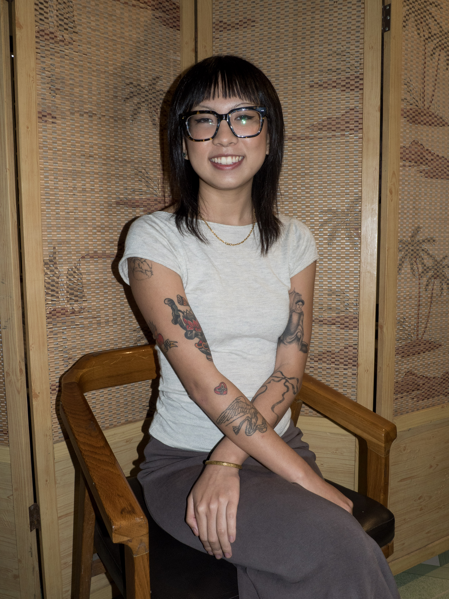

10/04/2025
Anh Dao Ha
From left: Men’s formal overkimono (haori) jacket with dragon and tiger facing each other, 1920–40. Black plain weave silk ; plain weave silk lining, hand-painted in ink. 91 x 129 x 48 cm.
Workshop
“What an amazing thing it is that objects made for use in real life should possess a beauty that transcends reality. Yet in the end, to create a good pattern is to grasp an object’s real nature (…) a pattern shows us the life of things.” Soetsu Yanagi, The Beauty of Everyday Things, Penguin Random House, 2018.
Process
Reveal, do not display, suggest without disclosing. These are the principles behind Japan’s thousands-of-years-old culture, which is still woven from a balance, in a perpetual state of becoming, between solids and voids and a sense of harmony.
Philosophy
The exhibition at MAO offers a unique glimpse into Japanese material culture through about 50 haori and juban—the garments worn over and under men’s kimonos, respectively—and a few pieces of traditional children’s clothing from the Manavello collection, in dialogue with installations by contemporary artists, including Kimsooja, Royce Ng, Yasujirō Ozu, Tobias Rehberger, and Wang Tuo, creating a dynamic conversation between past and present. The project is unprecedented in Italy and indeed Europe, and is therefore an absolute first amongst exhibitions devoted to the art of the Far East.